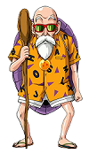
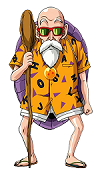
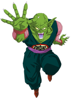
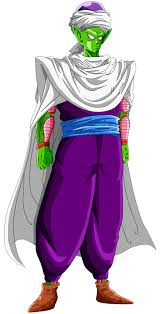
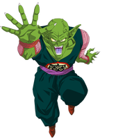
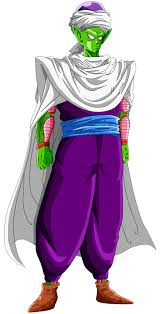

DRAGON BALL
TRAMA
Son Goku, un ragazzino di 12 anni con una strana coda di scimmia, incontra Bulma, una ragazza di 16 anni intenzionata a ritrovare le leggendarie sette sfere del drago, che permettono di evocare il drago Shenron, in grado di esaudire un desiderio. Notata la forza del ragazzo, la giovane convince Goku a partire con lei. Il loro viaggio li porta ad incontrare Olong un maialino con la capacità di trasformarsi in ciò che vuole per qualche minuto; Yamcha, predone del deserto che finirà per diventare un alleato; Chichi, la quale Goku inavvertitamente promette di sposare; e Pilaf
 , un uomo malvagio e ambizioso, alla ricerca delle sfere per far avverare il suo desiderio di regnare sul mondo. In seguito Goku si allena presso il Maestro Muten

, un attempato signore esperto di arti marziali, per poter partecipare al Torneo Tenkaichi, che richiama i migliori combattenti da tutto il mondo. Un ragazzo di nome Crilin diventa il suo compagno di allenamenti e rivale, ma in poco tempo i due divengono migliori amici.
Terminato il torneo, Goku si reca alla ricerca della sfera con quattro stelle, l'unico ricordo di suo nonno, e si scontra con l'Esercito del fiocco rosso, il cui leader vuole raccogliere le sfere del drago per sé stesso. Goku sconfigge praticamente da solo l'intera organizzazione militare, incluso il sicario Tao Pai Pai
, un uomo malvagio e ambizioso, alla ricerca delle sfere per far avverare il suo desiderio di regnare sul mondo. In seguito Goku si allena presso il Maestro Muten

, un attempato signore esperto di arti marziali, per poter partecipare al Torneo Tenkaichi, che richiama i migliori combattenti da tutto il mondo. Un ragazzo di nome Crilin diventa il suo compagno di allenamenti e rivale, ma in poco tempo i due divengono migliori amici.
Terminato il torneo, Goku si reca alla ricerca della sfera con quattro stelle, l'unico ricordo di suo nonno, e si scontra con l'Esercito del fiocco rosso, il cui leader vuole raccogliere le sfere del drago per sé stesso. Goku sconfigge praticamente da solo l'intera organizzazione militare, incluso il sicario Tao Pai Pai , contro cui aveva in origine perso, ma che annienta facilmente dopo un duro allenamento con l'eremita Karin. Goku si riunisce quindi con i suoi amici per sconfiggere i guerrieri di Baba la chiaroveggente e chiederle di localizzare l'ultima sfera del drago per riportare in vita l'amico Bora ucciso da Tao Pai Pai.
Goku e compagni passano i successivi tre anni ad allenarsi e si riuniscono al Torneo Tenkaichi. Qui i protagonisti incontrano l'Eremita della Gru, antico rivale del Maestro Muten nonché fratello di Tao Pai Pai, e i suoi allievi Tenshinhan e Jiaozi. Grazie all'intervento del Maestro Muten, gli allievi dell'Eremita della Gru decidono di volgere le loro forze al bene, abbandonando il sogno di diventare dei sicari. Alla fine del torneo Crilin viene ucciso da Tamburello, una creatura generata dal Grande Mago Piccolo. Goku si lancia all'inseguimento del mostro ma viene facilmente sconfitto. Il samurai Yajirobei conduce Goku alla Torre di Karin dove il giovane, bevendo l'acqua del dio maestoso, riesce ad ottenere la potenza necessaria a battere Piccolo. Nel frattempo il demone uccide Muten e Jiaozi e usa le sfere del drago per riottenere la giovinezza, prima di distruggere anche il drago Shenron. Goku affronta nuovamente il Grande Mago Piccolo, sconfiggendolo, ma prima di morire genera un uovo contenente suo figlio e reincarnazione Piccolo.
Su consiglio di Karin, Goku si reca dal Dio per chiedergli di ricreare Shenron, in modo da poter resuscitare le vittime del demone. Il Supremo esaudisce la richiesta del giovane e Goku diviene suo allievo per prepararsi in vista dello scontro con Piccolo. Tre anni dopo i protagonisti si ritrovano sull'Isola Papaya per il 23º Torneo Tenkaichi e anche Piccolo si iscrive al torneo con l'intenzione di vendicare il padre. Nella finale Goku e Piccolo si affrontano in una dura lotta, nella quale il ragazzo riesce a malapena a prevalere. Goku mantiene la promessa di sposare Chichi e i due lasciano l'isola del torneo a bordo della nuvola d'oro.
, contro cui aveva in origine perso, ma che annienta facilmente dopo un duro allenamento con l'eremita Karin. Goku si riunisce quindi con i suoi amici per sconfiggere i guerrieri di Baba la chiaroveggente e chiederle di localizzare l'ultima sfera del drago per riportare in vita l'amico Bora ucciso da Tao Pai Pai.
Goku e compagni passano i successivi tre anni ad allenarsi e si riuniscono al Torneo Tenkaichi. Qui i protagonisti incontrano l'Eremita della Gru, antico rivale del Maestro Muten nonché fratello di Tao Pai Pai, e i suoi allievi Tenshinhan e Jiaozi. Grazie all'intervento del Maestro Muten, gli allievi dell'Eremita della Gru decidono di volgere le loro forze al bene, abbandonando il sogno di diventare dei sicari. Alla fine del torneo Crilin viene ucciso da Tamburello, una creatura generata dal Grande Mago Piccolo. Goku si lancia all'inseguimento del mostro ma viene facilmente sconfitto. Il samurai Yajirobei conduce Goku alla Torre di Karin dove il giovane, bevendo l'acqua del dio maestoso, riesce ad ottenere la potenza necessaria a battere Piccolo. Nel frattempo il demone uccide Muten e Jiaozi e usa le sfere del drago per riottenere la giovinezza, prima di distruggere anche il drago Shenron. Goku affronta nuovamente il Grande Mago Piccolo, sconfiggendolo, ma prima di morire genera un uovo contenente suo figlio e reincarnazione Piccolo.
Su consiglio di Karin, Goku si reca dal Dio per chiedergli di ricreare Shenron, in modo da poter resuscitare le vittime del demone. Il Supremo esaudisce la richiesta del giovane e Goku diviene suo allievo per prepararsi in vista dello scontro con Piccolo. Tre anni dopo i protagonisti si ritrovano sull'Isola Papaya per il 23º Torneo Tenkaichi e anche Piccolo si iscrive al torneo con l'intenzione di vendicare il padre. Nella finale Goku e Piccolo si affrontano in una dura lotta, nella quale il ragazzo riesce a malapena a prevalere. Goku mantiene la promessa di sposare Chichi e i due lasciano l'isola del torneo a bordo della nuvola d'oro.